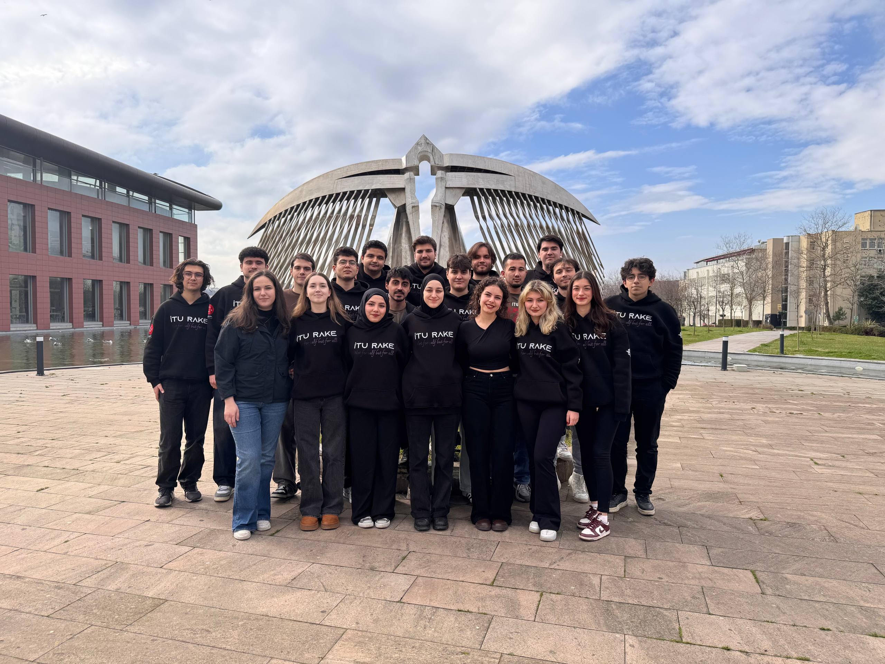
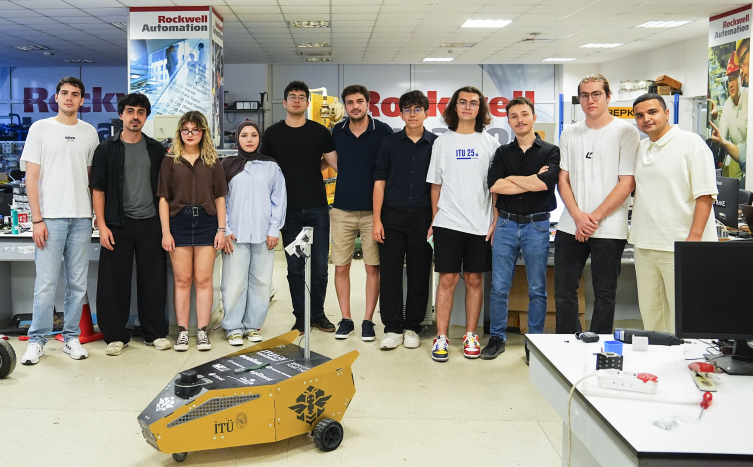
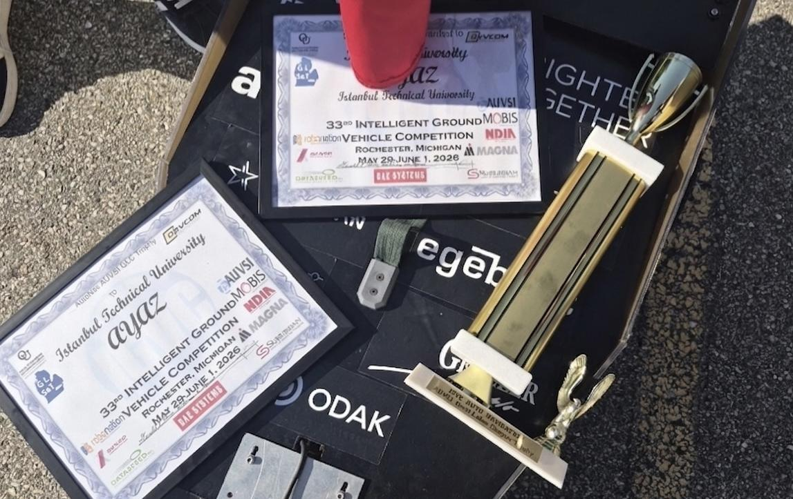

.png)

İTÜ RAKE, İstanbul Teknik Üniversitesi Kontrol ve Otomasyon Kulübü (OTOKON) çatısı altında Mayıs 2019'da kurulan, farklı mühendislik fakültelerinden gelen öğrencileri bir araya getiren deneyimli bir arama kurtarma robotu ekibidir. Üniversitemizin yüzyıllardır süregelen mühendislik birikimi ve kulübümüzün yıllara dayanan tecrübesiyle yola çıktık.
Amacımız; insanların erişemeyeceği ve hayatlarını tehlikeye atacağı doğal ve insan kaynaklı afet durumlarına teknik ve bilimsel çözümler üretmektir. Aynı zamanda okulumuzun farklı fakültelerinden gelen azimli öğrencilerin, mühendislik uygulama alanlarını keşfetmelerine öncülük etmeyi hedefliyoruz.
Kara araçları alanının en prestijli uluslararası organizasyonlarından biri olan Intelligent Ground Vehicle Competition'a (IGVC), ABD'nin Michigan eyaletindeki Detroit kentinde 6 ülkeden 28 takım katıldı. Tamamen kendi tasarladığımız otonom aracımız AYAZ ile yarışmaya ilk kez katıldık ve finale kalarak Dünya İkinciliği elde ettik.
AYAZ, zorlu parkurlarda tamamen otonom şekilde hareket ederek engel algılama, rota planlama, otonom navigasyon ve görev tamamlama gibi kritik kabiliyetleriyle jüri üyelerinden yüksek puan aldı. Bu sonuç, yaklaşık bir yıllık yoğun bir çalışmanın ve elektronik, mekanik, yazılım ve organizasyon ekiplerimizin ortak emeğinin karşılığıydı.

Takımımız; mekanik, elektronik, yazılım ve organizasyon ekiplerinden oluşan disiplinler arası bir yapıya sahiptir. Araçlarımızın mekanik tasarımından otonom sürüş yazılımına, elektronik kart tasarımından 3D baskı parçalarına kadar her şey tamamen ekibimiz tarafından, kampüsümüzdeki laboratuvarda geliştirilir.
Bilimin, teknolojinin ve inovasyonun ışığında kendini geliştiren öğrencilerin bir araya gelmesiyle oluşan bu ekip dinamiğiyle, dahil olduğumuz her projenin altından kalkmak için var gücümüzle çalışıyoruz.

Bugüne kadar kara araçları üzerine yoğunlaştık; şimdi hedefimiz, kara ve hava araçlarının birbiriyle haberleşerek birlikte görev yapabildiği, tamamen otonom bir arama kurtarma robot filosu oluşturmak. AYAZ ile kazandığımız otonom navigasyon ve algı tecrübesini, KAYRA ve İHA gibi yeni platformlarımıza taşıyarak büyümeye devam ediyoruz.
.jpg)